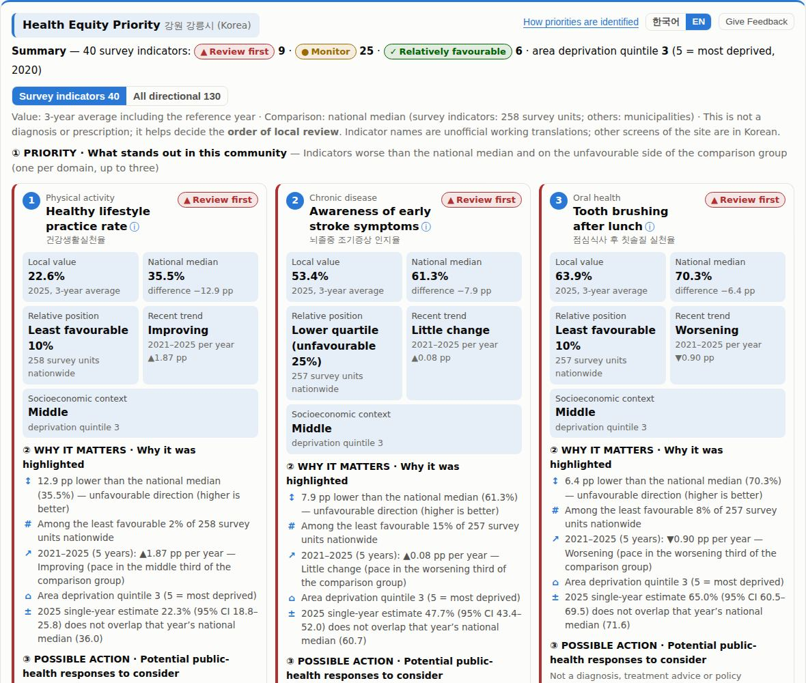
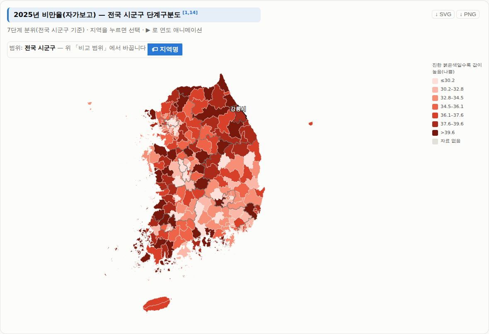
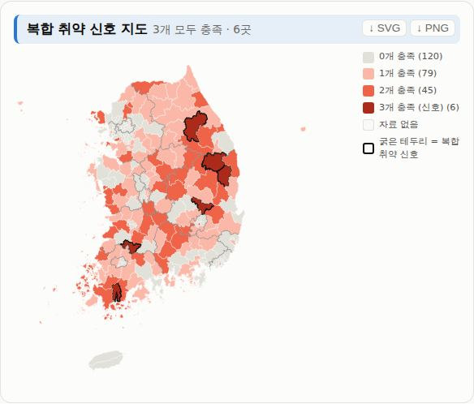

The problem
In Korea, the health data a local public-health team needs for one area are published by different agencies in different systems: the Korea Community Health Survey (Korea Disease Control and Prevention Agency), cause-of-death statistics (Statistics Korea), and health-screening and insurance statistics (National Health Insurance Service). Each has its own tables, years and geographic units — the survey is reported for {{N_HC}} survey units, most administrative statistics for {{N_SGG}} municipalities.
Local governments prepare four-year local health plans; preparation of the next cycle (2027–2030) begins in the second half of 2026. Comparing an area across these sources means opening several systems, reconciling units and years, and judging whether a difference is larger than survey uncertainty.
How it works
- 1DATA
Official public-health data, {{N_IND}} indicators, {{Y0}}–{{Y1}}, with sources and update dates.
- 2PRIORITY
Identify health disparities: gap from the national median, relative position, recent trend and area deprivation.
- 3INTERPRET
Understand why they matter: plain-language reasons computed from the data, with 95% confidence intervals.
- 4ACTION
Explore possible public-health responses: linked official guidance (Korean national and provincial plans, WHO, NICE, CPSTF).
Live product
Real screenshots of the running site (not mock-ups). The Health Equity Priority card can be switched to English; the other screens are in Korean.



What is in the data
Counted directly from the data files the app loads (data validation, {{VERIFIED}}). Numbers at different geographic levels are not added or multiplied.
Evidence & data sources
| Source | Role in the tool | Indicators |
|---|
Most administrative indicators were obtained from their original producers via a public research database (Kim D. et al., v1.7, KDCA archive); mortality 2018–2025 was re-checked against Statistics Korea tables. Linked guidance: Korean national and provincial health plans, WHO, NICE (UK) and the US Community Preventive Services Task Force. Per-indicator metadata: indicator_metadata.csv.
How priorities are identified
For each indicator the tool combines four components scored 0–1 and averages those available (missing parts are dropped and weights renormalized, never set to zero):
- Gap (35%) — direction-aware relative difference from the national median.
- Relative position (25%) — share of comparable areas with a better value.
- Recent trend (20%) — 5-year slope, by tertile of the comparison group.
- Socioeconomic context (20%) — area deprivation quintile (shown side by side, never as a cause).
“Review first” additionally requires the lower 25%, a score ≥ 0.55, a 95% confidence interval that excludes the national median, and a relative standard error ≤ 20%. Only tiers are shown, not scores. No prediction models, z-scores or causal inference are used.
What makes it different
Not “more data”. Statistical dashboards show values; this prototype connects them into one decision-support workflow — Data → Priority → Interpretation → Action — for a single community, and shows its uncertainty and limits on the same screen:
- Survey and administrative sources compared on their own correct geographic level ({{N_HC}} survey units or {{N_SGG}} municipalities).
- Every flagged indicator explains itself with computed facts (gap, position, trend, confidence interval).
- Possible actions link to official guidance documents instead of generated advice.
- A one-click community health report (print / PDF / Word, Korean) assembles the same facts into a draft that practitioners can check and adapt for local health plans.
- Sources, update dates and known limitations are disclosed in the product.
Impact
Current stage: Working prototype. There is no user-testing or impact evidence yet, and no usage figures are claimed. {{REVIEW_STATUS}}
Next validation steps
- Testing with local public-health practitioners (task: find and explain one priority for their area).
- Usability testing on desktop and mobile; the in-app 1-minute feedback form (“Give Feedback”) is ready.
- Decision-usefulness evaluation: does the priority list match practitioners’ own assessment, and does it change what they review first?
- Independent methodological review, published with reviewer consent.
Known limitations
- Korean interface except this page, the in-app English overview and the Health Equity Priority card.
- Survey indicators carry sampling error; neighbouring ranks may not differ meaningfully.
- No programme input or output data, so the tool cannot evaluate programme performance or effects.
- Healthy life expectancy and the deprivation index are approximations computed for this project, not official statistics.
- The prevention knowledge base was collected and summarized with AI assistance; original documents are linked and should be checked.
- Not built: disease prediction, policy-effect prediction, chatbots, personal health data entry or accounts.